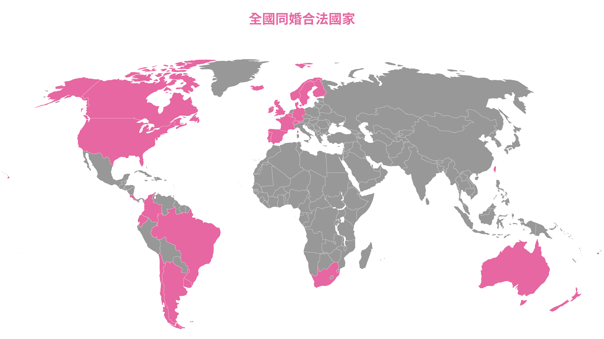
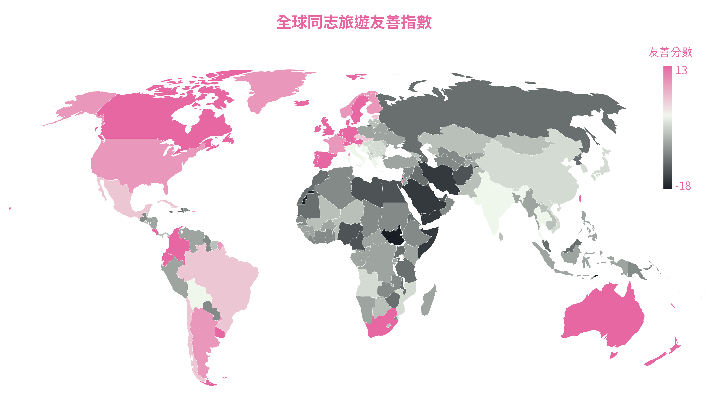
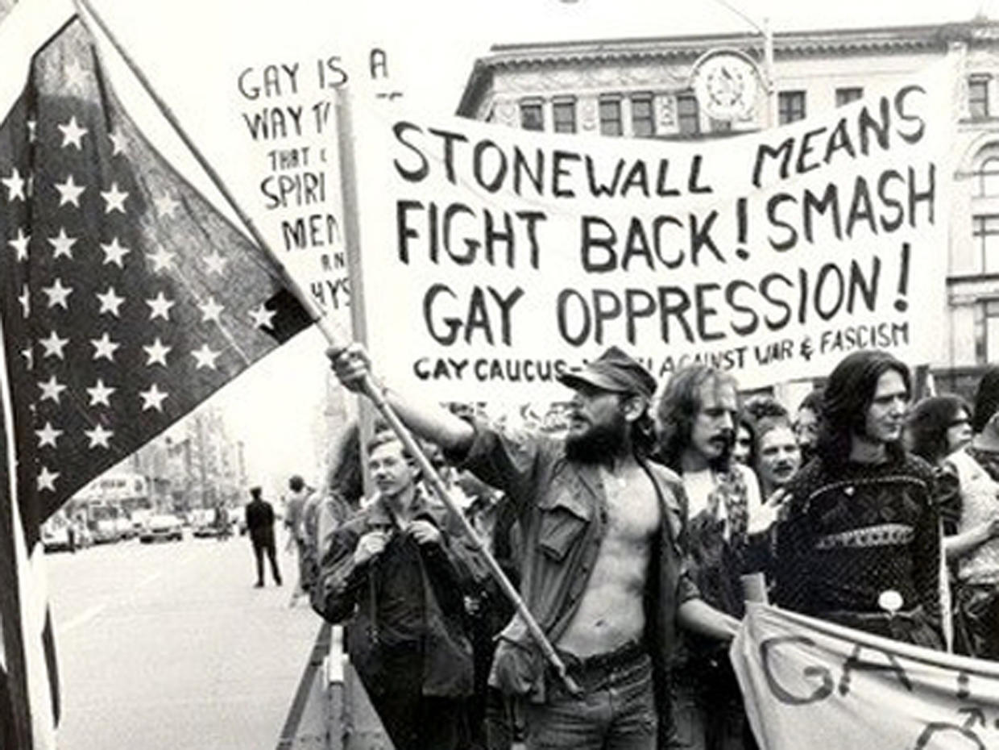
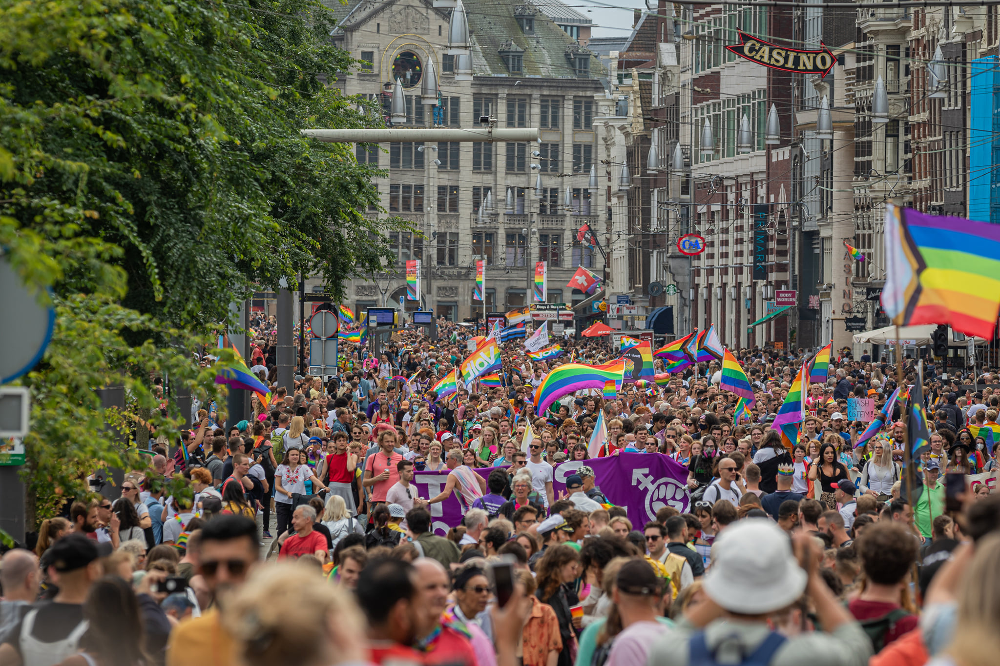
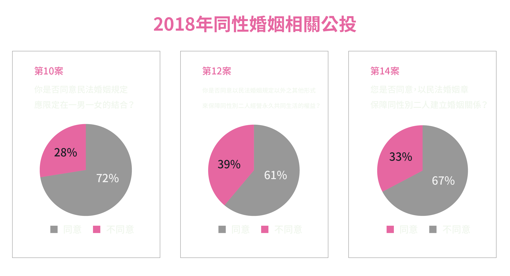
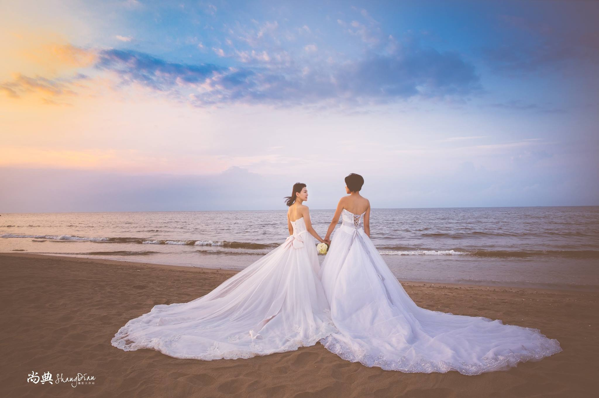

粉紅經濟是什麼？
粉紅一詞起源於納粹會將男同性戀囚犯戴上粉紅色倒三角形臂章識別，此後該標誌與顏色被轉化為同志運動的象徵之一。故粉紅經濟即同志經濟，是一種基於性別與性傾向劃分的小眾消費市場，囊括所有因應LGBTQ族群─即女同性戀者（Lesbian）、男同性戀者（Gay）、雙性戀者（Bisexual）、跨性別者（Transgender）、酷兒（Queer）─需求產生的一系列經濟活動。
從提供同志社交與生理需求的同志酒吧、同志派對、同志三溫暖，到在同性婚姻合法化後，有十足發展潛力的同志婚紗攝影、同志旅遊等等，五花八門。服務的客群除了LGBTQ外，也包括對該族群友善的異性戀者。
「全美第一個通過同性婚姻的紐約州，在通過那一年帶來的經濟成長相當驚人。」旗下同時經營著派對品牌與女同志雜誌的LEZS女人國創辦人王安頤，提出他們評估的一項資料。2012年7月，美國紐約市長與市議會發言人共同宣布，在同性婚姻通過的那一年內，紐約的慶祝活動、婚禮等等相關消費，替紐約帶來了2.59億美元（約77億台幣）的經濟成長。
2019年臺灣成為全亞洲第一個通過同性婚姻合法化的國家，在周邊國家皆尚未法治化的時候，許多人參考歐美過往同性婚姻通過後的發展經驗，對臺灣粉紅經濟潛藏的商機同樣表示看好。
「粉紅經濟的崛起一定是在婚姻平權之後。」NewUrbanMale的創始人尚志來自馬來西亞，他在亞洲兜兜轉轉，看過泰國、香港、中國等諸多國家的市場後，最終看中了臺灣對同志友善的環境與未來的商機，選擇留在臺灣經營，並創立粉紅經濟研究所，讓有志在相關領域發展的人一同交流：「結婚之後就是一起過生活，要怎麼去過更好的生活，就跟商業有關，商機就在這。」
「我認為如果好好做起來，臺灣可以做得很好。」尚志說，他分享自己千禧年時剛到臺灣時的經驗，當時他對臺灣政府對於LGBTQ的支持態度感到驚奇，他在新加坡與馬來西亞時，雖然從不認為自己「有問題」，但是他也很清楚政府對他們並不是一視同仁。「臺灣有這個名氣，這裡的人待人又友善，對遊客來說，來旅遊就是要舒服。這是一個非常吸引人的空間，自然就形成商業的一個可能性。」尚志說。
這也是他在一海峽之遙的臺灣觀察中國市場十多年，卻留在臺灣，不進駐中國的原因：「我知道中國商機很大，但是考察這麼多年，覺得跟我要的衝突。一個海大，商機也大，但是風浪也會大，沉船的機率也大。風險太高。」
臺灣對於同志友善的程度，是全球有目共睹的。同志旅遊指南《Spartacus International Gay Guide》每年會發布一份全球同志旅遊指數（Gay Travel Index），依據該國政府對同志的態度、社會氛圍、是否曾發生對同志族群的暴力事件等等方面替202個國家評分。在2021年的評分中，臺灣被評為第10名，與冰島、德國、澳洲等國並肩，是亞洲唯一一個同時也是適合同志旅遊的國家。
談到亞洲同志或跨性別的旅遊勝地，或許有很多人的第一印象會是泰國。王安頤對此有不同看法，「泰國那種是娛樂文化，國家本身並沒有在平權方面發展。」尚志也有類似觀點，他認為相較於泰國色情產業的路線，臺灣的社會包容度很高，加上人民友善熱情的特性，能夠發展出更加多元、完全不同於泰國的新路線，不必擔心會和泰國競爭。「臺灣有藝文、電影、夜店、派對，很多種不同的形態。」王安頤說。
在臺灣知名的同志聚集地─紅樓廣場，周遭林立著許多同志酒吧，這些酒吧的主要客源便是來自世界各國的觀光客。「除了沒有北極、南極的客人，剩下都有。」經營牡丹酒吧逾十五年的蕭江銘半開玩笑，他說這些來自四海八方的客人們，並不會集中在特定時節過來，而是分散在一年中，這樣的客源對酒吧來說非常重要，「臺灣人只有五、六、日會來酒吧，因為要上班，不可能平日過來，這樣七天裡只有三天能做生意。」
粉紅經濟的興盛，不僅僅只有同志酒吧、彩虹友善商家等相關產業受惠，能夠帶動的產業其實相當廣泛，「同志不可能只去彩虹友善餐廳吃飯，來旅遊的時候也不一定選擇彩虹友善的飯店。」尚志說，尤其是有相關的大型同志活動時，如同志大遊行、亞洲同志運動會，經濟效益更加驚人。國際訂房網站《Airbnb》曾統計2019年同志大遊行當週，使用其平台在大台北地區的訂房人數，高達2.1萬人，其中外籍遊客多來自馬來西亞、新加坡、香港等鄰近亞洲地區，顯見參與臺灣同志遊行的外籍遊客中，多數來自於周邊國家。
致力於推廣LGBTQ權益的Open For Business，在2019年提出的臺灣報告中也提到友善的社會風氣，會成為選擇到此國家旅遊的誘因，或者更進一步─到此就業。
尚志以歐美企業舉例，現今許多歐美公司都會成立相關部門，除了對外宣傳公司的友善環境外，對內也能夠攏絡員工，當員工得到公司的支持，就會更願意向公司奉獻心力。臺灣現在正有這樣的契機，能夠形塑出友善的社會氛圍，「很多企業喜歡友善、開放的環境，但是中國或新加坡都沒有這樣的環境。」這些人的到來，能夠替臺灣提供新的刺激，激發出新的想法，並帶來更多的商機。
綜上所述，在其他亞洲國家尚未將同性婚姻合法化的時候，正是臺灣趁機發展粉紅經濟的好時機。即使受到疫情影響、國門封閉使得臺灣的觀光產業一落千丈，但是仍有許多業者在為旅遊熱度回溫的那天做準備。
本報導將採訪不同類型的粉紅產業經營者，除了從這些業者的經驗中了解他們曾遭遇的困難以及未來的發展方向外，也希望從中找出粉紅經濟未來在臺灣的發展性以及可能性。
我知道你們永遠不會停下，
因為這數十年來我一直看著你們。
即使過去曾經退縮、感到羞恥，
但是你們現在不會。
勇敢地去擁抱石牆的遺產吧！
這段話來自於女神卡卡在2019年WorldPride NYC上發表的致詞，真摯的內容感動許多來參與遊行的群眾。這是世界同志遊行組織WorldPride首度在美國舉辦，而該場遊行主題正是為了紀念開創現代同志權利運動的重要事件－石牆暴動五十週年。
1969年的美國，如火如荼進行了十多年的非裔美國人民權運動已經逐漸邁向尾聲，非裔美國人的呼聲被社會大眾聽見。然而此時的美國同志族群仍然隱沒在社會的陰影中。
當時美國的同志權益不彰，同性戀被美國精神醫學學會視為是一種反社會人格障礙，醫師可以利用電擊，甚至切除同性戀者的腦前額葉「治療」他們；同性性行為在伊利諾州外的所有州都是犯罪行為；警方也會大力取締同志與相關產業，因此同志酒吧等同志場所皆由黑幫經營，這些黑幫並不是為了人權、支持同志等等的理由而經營同志酒吧，而是為了能夠哄抬酒水價格大敲竹槓。在這樣的社會氛圍下，「出櫃」這個概念根本不存在，若是不小心被發現同志身分，朋友、工作都會在一夕之間消失。
1969年6月28日凌晨，六名警察在石牆酒吧實施臨檢，被趕到酒吧外的顧客朝警方丟擲石頭，兩方人馬發生暴力衝突，此類惡性事件雖然於當時的美國屢見不鮮，但令人意外的是石牆暴動卻開啟了美國同志運動的新篇章，同志運動路線由過去的低調和平，開始轉往更激進的運動路線。
此後美國同志族群組織了第一次的同志遊行，並促成許多國家的同志運動崛起。「石牆暴動」也被認為是現代同志運動發展的里程碑。直到2015年最高法院宣布全美同性婚姻合法，當中經過了46年的光陰。
即使是全球最早宣布同性婚姻合法的荷蘭，對同志的態度也並非一直以來都相當友善。
1911年荷蘭將同性性行為的合法年齡門檻訂為21歲，而異性性行為合法年齡則是16歲。除了法律上的歧視，當時的荷蘭同性戀也面臨和美國同性戀一樣的情況─不人道的治療手段、被揭露性傾向便會失去一切，政府同樣會吊銷男女同志聚集的酒吧營業執照。
第二次世界大戰後，荷蘭的反同性戀氛圍達到高峰，但也是在1950年代末，部分醫生與神職人員對同性戀的看法轉變，認為同性戀同樣擁有人性與愛的一面，並且比起匿名性行為，更喜歡穩定的關係。這些人大力說服其他同儕，同性戀並非問題，成為荷蘭同志運動成功的關鍵。
此後大量的同志商家在荷蘭的首都－阿姆斯特丹開業，使得荷蘭的同志運動與同志產業進展快速，並在1970年代躍升為歐洲同志世界之都，是許多歐洲同志們必去的觀光勝地。1979年荷蘭同志組織進一步與官方合作舉辦「同志驕傲日」，此後同志活動與官方的交流越來越密切，也使得阿姆斯特丹成為世界知名的彩虹城市，聲名遠揚。
即使以更近代─1950年代末的醫生與神職人員大力支持的事件來看，荷蘭的同志平權之路也耗費了四十多年。
那麼臺灣呢？
與這些國家相較，臺灣的起步似乎也差不多，「以前知道你是同志，就會隨便安插個妨害風化罪、猥褻罪的罪名。警察看到男生留長頭髮直接當街剪掉。」蕭江銘回憶起過往的經歷。長達38年的戒嚴，更讓臺灣的同志運動相當晚才起步。
回顧臺灣同志運動發展的歷史，可以發現其發展與婦女運動密不可分。研究同志領域的國立臺灣大學外國語文學系助理教授朱偉誠，認為1992年女同志團體我們之間，在婦女團體婦女新知舉辦的園遊會中亮相，其後又拒絕所有媒體採訪，該行為勾起了媒體對同志的偷窺欲望，進而引發了臺灣同志運動的濫觴事件─1992年台視世界新聞報導臥底潛入女同志酒吧中偷拍，該事件促成同志團體動員連署抗議，也開啟了1990年代的臺灣同志運動。
王雅各在《台灣男同志平權運動史》中曾提及1990年代前的臺灣社會基本上是沒有「同志人權」的概念，新公園（即現今的二二八和平公園）的遊客會被警方騷擾、性傾向暴露後會被校方退學。直到1993年臺灣大學男同性戀問題研究社的出現，以及「誰來關懷同性戀人權」公聽會的舉行，才將同志人權的概念帶到人們的眼前。
然而不消幾年，媒體便對同志這個題材感到厭倦，因為缺乏領導話題與資源支持的同志運動組織難以吸引社會目光，因此逐漸轉往小型的同志社群發展，或是如晶晶書庫一般，以同志商家的型態在背後默默耕耘。
直到2000年後政治環境改變，時任執政黨強調「人權」的重要性，天時地利人和，讓這些積累開始有了成果─2003年臺北同玩節的遊行活動。該次遊行成為臺灣同志史上第一屆同志遊行。
當時的遊行隊伍從臺北新公園出發，沿著衡陽街至另一個著名的同志據點─西門町紅樓廣場。即使遊行路線只有短短的750公尺，遠遠少於近幾年動輒4、5公里長的遊行路線；主辦方考量到當時的社會風氣，也提供免費面具供遊行群眾配戴，但參與人數仍只有800人。
「我帶媽媽上街，好多朋友還要戴墨鏡，他們走在人行道、騎樓下，不敢走進人群。」負責營運ANIKI健身房的Clark回憶起第一屆同志大遊行的情景。阿嬤當時也是戴墨鏡的一員，「那時候才幾百個人，大家都怕別人知道。」
余夫人經營漢士男同志三溫暖已近三十載，常被同志圈稱呼為阿嬤的他，一直以來都對自己的同志身分相當低調，即使是現今，不熟識的人若是詢問起他的同志身分，他總是會含糊帶過。但是在那樣的年代中，他還是在第一屆的遊行中，戴上眼鏡、帽子加入遊行。為什麼？阿嬤沉默半晌後緩緩道出原因：「總是要有人站出來。如果我們這邊的人都不敢參加遊行，其他人怎麼敢參加。」
遺憾的是，即使當時的臺北市長馬英九在2003年臺北同玩節的開幕致詞中，表達官方對同志的支持，但事實上從2000年同玩節創辦之初，該活動便屢屢遭市議會刁難；第一屆同志大遊行過後，更有許多市議員對遊行活動表示不滿，要求將遊行從臺北同玩節中剔除，因此自第二屆開始的同志遊行改由同運團體聯合籌辦。
官方的反對態度並未對隔年的同志遊行造成嚴重打擊，反而發展得更好。第二屆同志遊行人數暴增為五千餘人，此後同志遊行的規模以驚人的速度成長，更帶來龐大的經濟效益。
由於同志遊行固定在十月的最後一個週六舉行，外國觀光客眾多，為了消化遊行帶來的人潮，Clark決定以價制量，將ANIKI非會員的單次入場價提升為1200元，即使如此，遊客還是絡繹不絕：「光是週五到週日那三天，營收就有近300萬。」短短三日的收入便佔據了ANIKI一成的年營收。
同志遊行的人數在2019年達到20萬人的高峰，遠超亞洲第二大香港同志遊行的1.2萬人。臺灣的同志遊行甚至被英國媒體《BBC》稱為是亞洲最大的同志遊行。尚志對此十分敬佩，他表示穩定、大規模的同志遊行在亞洲國家中相當罕見，甚至有許多國家的同志遊行才剛開始舉辦。
王安頤說2019年參與的外國觀光客相當多：「20萬人中估計有9萬個外國人。這些人在那段時間中所帶動的消費力是非常驚人的。」使這年的同志遊行人數，比前一年暴增6萬多人的關鍵性事件，莫過於同年5月實行的《司法院釋字第七四八號解釋施行法》，即保障同性婚姻之專法。
1986年祈家威與伴侶至法院公證結婚被拒絕，揚起了臺灣同性婚姻平權的抗爭大旗。雖然2006年時就有立法委員提出相關法律草案，但一直到2012年多元成家草案出爐後，才掀起新的討論。
2013年11月30日是台灣宗教團體愛護家庭大聯盟（護家盟）首次舉行的遊行活動，旨在反對多元成家法案。同志運動團收到消息後，也緊急動員，發起「路過護家盟」活動。
「那時候很多朋友去了很震撼，沒想到反對的聲音這麼大，」蘇珊說，她同樣也有參與路過護家盟的活動，當時護家盟的遊行隊伍讓她感到害怕，這份害怕也讓她不滿：「我不應該在我的國家裡面有這種害怕的感覺。而且我算是比較堅強的，要是不堅強會更害怕。」與蘇珊熟識的王安頤見到護家盟大遊行的人潮後，也開始懷疑自己做的只是竹籃打水：「我們在那邊辦party、雜誌，真的有什麼用嗎？為什麼社會還是這樣子？」她們開始思索是否能夠做點什麼，直到遊行現場的一場對話啟發了她們。
遊行當天施明德的妻子，同時也是人權運動者的陳嘉君帶著兩位女兒到場支持同性婚姻，在現場一隅與護家盟支持者展開對話─
「這個叫基本人權。
可以愛上誰就跟誰結婚，
組成一個家庭，
小孩也可以和其他人一樣受到政府保護。」
…
「妳覺得這個法案真的能保障我們嗎？」
「不是法律保不保障我們，
是當事人才有講話的權利。
如果妳不是同性戀
這個法案根本與妳無關。」
最終該名婦女向陳嘉君表示會再好好思考該議題。這段對話深深影響了王安頤，「對話是非常重要的，一定要有對話的產生，事情才有轉變的可能，如果連對話都沒有的話，那只能繼續活在各自的世界、各自的想像裡面。」
蘇珊、王安頤與幾位朋友在幾經思索後，成立同志人權法案遊說聯盟，致力於向立法機關遊說。過往的同志運動團體一直專注在社運、街頭運動領域，「但立法還是屬於政治人物、議院裡的人的想法，說動他們才能讓事情在法律面有所改變。」
她們認為立法院院長跟委員即使知曉同志議題的存在，卻可能從來沒遇過同志，導致對議題的情感連結薄弱。因此同志人權法案遊說聯盟將不同年齡、階層的同志帶到政府要員面前，告訴他們同志們面臨的社會處境、困境。「但是政治真的是非常複雜的東西，他可能被這些故事感動，可是政績、選票更重要，這會變成人性的考驗。」王安頤無奈道，但是她們也曾遇過不在乎當選與否的議員：「那不是他最重要的事情，重要的是真的可以幫助到人、可以為人民服務。」
在科技領域就職的蘇珊也利用自己的專長，幫助同志人權法案遊說聯盟架設了同志人權立場觀測站，追蹤每一個候選人對於婚姻平權的態度：「我覺得這應該讓人家看到，然後選舉的時候才知道要選誰。」
2017年司法院公布《司法院釋字第748號解釋》，宣告《民法》未保障同性婚姻權利違憲，限期2年內改善。反同志團體下一代幸福聯盟主張婚姻應由一夫一妻構成，因此隨即發起婚姻定義與同性婚姻另立專法之公投，期望以專法保障同性婚姻；同志支持團體因此組成了婚姻平權公投推動小組，提出婚姻平權公投，希望同性間的婚姻能夠被《民法》平等對待。
該公投雖然讓許多LGBTQ族群向親朋好友出櫃、希望得到他們的支持，但其結果也讓LGBTQ族群大受打擊。若將公投結果簡單以反對同志與支持同志兩方歸類，反對的意見皆超過六成，僅有三成的人支持同性婚姻。「會覺得走在路上三個人中就有兩個人不認同你。」蘇珊說。
2019年同性婚姻專法《司法院釋字第七四八號解釋施行法》三讀通過。該法案雖然回應公投結果，將同性婚姻以專法處理，但其內容除了以法律保障同性婚姻的效力外，也將財產、扶養義務等方面納入規範。臺灣成為全亞洲第一個將同性婚姻合法化的國家。
祈家威這場曠日費時的奮鬥旅程終於告一個段落。從解嚴到同性婚姻合法化，臺灣僅僅走過了32個年頭。「立法院定錘下來後，就是一個跨時代的進步。」Clark說：「從那一刻開始，我們可以很驕傲地講說，在我們國家我們擁有這樣的權利。」
從捷運西門站的1號出口處離開，一到地面就可以馬上從熙來攘往的人群中，看到矗立在對街的復古洋樓。在充滿著日式風情的八角紅磚洋樓旁，架著燈光效果華麗的音樂祭舞台，音樂聲流淌在微微悶熱的空氣中。
經過吵嚷的音樂舞台，向紅樓南廣場走去，令人驚奇的是這裡僅僅相距八角樓不到一百公尺，音樂聲卻已經消弭。在這片僻靜的紅樓南廣場中，有許多家看似露天咖啡廳的酒吧，這裡是著名的同志聚集地─紅樓。
風光熱鬧的紅樓，其實早在1970年代就是同志的熱門聚集地。當時的紅樓戲院因為設備老舊，轉而發展為二輪片戲院。低廉的票價讓許多同志聚集在這裡，不是為了看便宜的二輪電影，而是希望在這裡找到性向相同的人，並來段豔遇。
直到1997年臺北市政府收回紅樓的承租權，紅樓戲院宣告熄燈，但是因為資金與市場改建等問題，導致這棟洋樓一直空閒著。2000年十字部分的西門市場被一場大火燒毀，僅餘下八角形的主樓。臺北市政府雖然推動了紅樓重建計畫，但此時西門町的發展重心早已轉移至成都路的另一端，此後紅樓的發展越發地一蹶不振。
低迷的景氣導致西門市場的租金變得相當廉價，加上紅樓南廣場半封閉的特性，吸引了同志酒吧進駐。在2006年紅樓第一家男同志酒吧小熊村開幕後，在短短半年內紅樓南廣場進駐了大量的同志酒吧。
蕭江銘也是在這個時間來到了紅樓南廣場。事實上現今的牡丹酒吧並非他的第一間店，他曾經在林森北路一帶開了五間同志酒吧，乍聽相當風光，但是因為當時的社會封閉，同志酒吧的經營者常常與警察打游擊戰：「雖然不會明講是同志酒吧，但是警察知道，他們會給你一個藉口要你關店。同志為了避免麻煩就關，反正再去找另一間就好了。雖然當時沒行動電話，但是只要通知幾個客人，這些人一下就來了。」
開開關關的經營模式使得同志酒吧大部分會選擇頂下林森北路一帶的廉價陪酒酒吧，使得空間與環境十分不理想，也讓同志酒吧變得相當神祕，若是沒有人引路便不得其門而入。
曾造訪這種同志酒吧的王安頤，並不喜歡這種陰鬱的氛圍：「會覺得好像是去一個見不得人的地方，可能過12點還要按門鈴。躲躲藏藏的感覺。」
紅樓南廣場兼具露天與半封閉的特性，讓蕭江銘看到了不同的同志酒吧發展方式，他笑說紅樓廣場根本是老天給同志的應許之地：「我想打造的以前那種樹下奉茶的地方。」他指了指座位旁的兩棵樹，「讓兩個來自不同方向的旅人坐下來休息、聊兩句。」
因此蕭江銘在酒吧的管理上花費了許多心力。這裡聽不到震耳欲聾的音樂聲，也不會見到骰盅、撲克牌等賭博道具，來這裡的都是想放鬆小酌，享受露天環境的同志們，他透過這種方式讓圈外人理解同志樣貌，「講難聽點就是表演給路過的人、鄰居、老人家看同性戀是什麼樣子的，因為同性戀不會表現在臉上。」
早期許多人對同志的印象都是來自於報紙的負面消息，因此成立之初，蕭江銘也遇過相當不客氣的鄰居。
「那時候我和幾個長官、自治會會長在這邊談事情，一個阿桑經過說：『我兒子經過這邊會不會被摃尻川（被男同志騷擾）。』」蕭江銘說，當下他很想上前和對方理論，最終因為現場還有其他人而作罷。
附近的店家也曾因為他將店面一隅提供給愛滋病匿名篩檢而感到不滿。「他覺得有礙觀瞻，跟我說蕭先生你不趕我來趕。」蕭江銘笑了笑，繼續道：「我告訴他你趕趕看。」在他的堅持下，牡丹酒吧在這裡營業了十六年，匿名篩檢就在這裡服務了十六年。「那只是驗愛滋的，透過檢驗大家才會知道啊。」蕭江銘說：「對我來講同志就是應該要做好事，這是好事、是對的事，我為什麼不做？」這樣的想法與堅持，讓周遭的店家願意共同努力，在2015年成立了紅樓南廣場彩虹友善商家聯盟。
「也不是說想成立就成立，」蕭江銘點起一根菸解釋道，附近店家的同質性高，店主間鮮少願意互相合作，因此一開始辦活動的時候都只能自己將不足的金錢、人力補上，「事情做久了，人家覺得不錯、想加入，我再放手讓大家一起參與。」
紅樓商家有志一同的努力，讓紅樓南廣場成功復活，再度成為同志的聖地，同時也成功在鄰近居民和執法機關中建立良好的形象，除了三十歲上下的遊客外，也會有破百歲的鄰居來這裡坐坐、和店家打招呼；偶爾也會聽到巡邏經過的警察閒聊稱讚這裡的店家自律，治安良好。
紅樓南廣場除了讓同志融入人群，展現無異於他人的一面外，蕭江銘也笑說這裡像同志運動的根據地，不僅參與完同志遊行的人會來這裡小酌一杯，發起同性婚姻公投時，這裡也是重要據點。
牡丹酒吧由三間店面構成，公投時蕭江銘將其中一間店面挪給公投連署用，「準備好多筆跟桌子擺在那邊，從早簽到晚，每天都是這樣一箱一箱送。因為這邊是全臺灣最晚截止收件的地方，到最後一天還收到滿滿兩箱A4紙用的箱子。」他自豪地說道，背後掛在牡丹酒吧前的彩虹旗幟在徐徐的微風中飄揚著。
「不過現在同婚通過我也不知道做什麼，大概是希望紅樓以後可以繼續扮演增加人們互動的地方，」蕭江銘笑了笑，「不然現在大家都用line聊天，多沒人味。」
從紅樓南廣場離開，沿著西寧南路前行，不消幾分鐘，就能看到在路口處巨大的廣告牆，上頭印著身材健美的半裸男性與被彩虹環繞的「漢士」字樣。這裡是同志圈相當具著名的漢士三溫暖。
新潮的廣告牆、入口處牆上掛滿的植栽與鮮豔的粉紅色油漆，這些布置很難令人想像漢士是間營運近三十年的老字號。1995年創立的漢士三溫暖，是現今大臺北地區碩果僅存的老牌男同志三溫暖，與其同一年代的百樂池、彩虹、今統、大番等等諸多知名同志三溫暖皆不復存在。
「阿嬤早。」
「早。」
從狹長的樓梯走上來的客人和櫃檯旁的余夫人打了聲招呼，出示了接種黃卡後拿著毛巾向內走去。略顯陳舊的三溫暖深處，時不時傳來一陣陣的卡拉OK聲。
常被同志圈稱呼為阿嬤的余夫人，穿著黑色、佈滿金色華麗花紋的長袖坐在櫃檯旁的椅子上逗著兩隻狗，一旁的籠子上擺著大大小小的罐裝狗點心：「這兩隻是員工養的，但跟我比較有得吃。」
1978年，阿嬤從臺南來到臺北的眼鏡行上班，當時的臺北同志生活相當精采多姿，臺北新公園、中華商場、紅樓戲院，都有阿嬤的足跡，「但是新公園比較好玩。」阿嬤點評道。
但是當時的社會環境對同志並不友善，即使是在這些同志的熱門聚集地流連，也必須萬般小心，透過眼神或小動作試探對方是否是真的同志，「有些會騙你說出同志身分，然後敲詐你。」
這樣的環境也使得阿嬤不敢找穩定的交往對象，「那個年代不像現在，如果談戀愛被對方纏上很麻煩。而且我們這種人也不是永遠都固定的對象，玩過幾次膩了就會再找別人。」加上保守觀念的壓力，阿嬤和許多老年同志一樣，都曾娶妻生子。
阿嬤時常用「我們這種人」來稱呼自己的同志身分，也側面反映出當時「同性戀是種罪」的想法給他帶來的深遠影響。即使如此，阿嬤仍然願意以同志的身分做力所能及的事，無論是照顧這裡的客人或是協助同志導演陳俊志拍攝「無偶之家」，也曾去過大學和學生分享同志的故事：「畢竟是在賺同志的錢，當然要幫他們做什麼。」
這也是他開三溫暖的初衷，「在這裡可以過著自己的生活，動作、語言都可以很自然，不用刻意隱瞞什麼，或是裝成異性戀。」因此同志三溫暖雖然是男同志的情慾空間，但漢士和阿嬤對許多同志來說，就像是家和家人一樣的存在。
過去這裡長住著許多因家庭壓力而不想回家的同志們，客人在這裡大方地聊起哪個客人不錯、抱怨被家裡逼婚，又或是安慰哪個沒找到對象而發脾氣的客人。「每天都有有趣的客人，講不完。」阿嬤笑道，說起幾位從三溫暖開業時就認識的老客人們。玉蘭仙子時常浪跡天涯，北中南東跑透透，來去猶如一陣風，「他今天去台南，妳早點來還遇得到他。」
「不過很多人都過世了。像黑貓姨過世很久了，好幾年。」阿嬤落寞地說，這些十幾年的老朋友泰半都過世了，「有的有去見最後一面，但有些家裡不太方便就沒辦法。」
即使如此，漢士三溫暖仍然是許多不同世代的同志們的另一個家。熱愛下廚的阿嬤，也會在年節時煮一大桌菜，讓沒有歸處的同志們一起在這團圓。像這樣宛若家人的互動，也讓他收了許多乾女兒；遠在美國的客人主動幫忙經營粉絲專頁；員工在店裡養了兩隻狗、在樓下佈滿花花草草，增添綠意。
然而這樣的一個空間可能在不久後就不復存在，2022年6月底漢士三溫暖所在的這棟大樓以6.7億元售出，未來極有可能會結束營業。「契約到之後，還能做就繼續做，」阿嬤豁達地說，「不能繼續做就退休去世界走走。
與以傳統方式經營的漢士三溫暖不同，同樣也是經營同志三溫暖的ANIKI健身房，雖然因疫情於2021年初歇業，但是其各式各樣的創意派對，如在活動會場內放滿泡沫的泡沫趴、戴上螢光手環的螢光趴、參與者都戴上頭罩的面罩趴等等，是許多現今三十至四十歲的同志們的共同回憶。
「過去的三溫暖很單調，只有暗房沒有其他東西。即使待了十六個小時，沒找到人，就什麼都沒有。」負責營運ANIKI健身房的Clark分享發想這些派對的動機，「有不同的玩法出現，在摸索的過程中會很開心，性愛反而變成附帶的期待。」
在許多派對中，最受歡迎的就是泡沫趴，從2009年第一場泡沫趴開始一直到歇業的那天，泡沫趴的人氣地位依舊屹立不搖。Clark有些哭笑不得地說，「我心裡有個問號，大家玩不膩嗎？」
現今與Clark一起合夥經營城穆同志按摩的Jason解釋：「泡沫趴是最可以遮蓋身材缺點的，所以最多人敢下去。」
Clark雖然是ANIKI的前營運長，但事實上他卻是從第一線接待人員做起，折毛巾、打掃、站櫃台他都做過。Clark在2008年踏入了位於林森北路的ANIKI舊館，發現ANIKI的環境有別於其他的同志三溫暖，相當漂亮且乾淨，「那時覺得這個行業應該有點潛力，就去應徵了。」
然而這個決定曾讓男友對他也相當不滿。「他說：『你好手好腳，美國留學回來，為什麼要去那種地方工作？』在當時的社會概念裡面，三溫暖是很不入流的地方，差不多是覺得你去做雞做鴨的感覺。」Clark解釋，當時的面試官對他前來三溫暖應徵一事也感到十分難以置信：「你政大畢業、美國留學回來，為什麼要來這裡工作？」
「我的專長是管理，」Clark說，面對種種質疑，他給自己訂下三個月的期限，若是無法在這段時間發揮他的管理能力，那麼他就會離開。他也成功的在三個月內完成了公司的雙語網站、制度建議、活動發想等等。
2010年當時的老闆─已故的天喜旅行社創辦人郭正利─因為股東認為ANIKI會對他的聲譽造成影響，而要求他必須將ANIKI脫手，Clark在其他人的邀請下，合資頂下ANIKI，並接任營運長一職，也發現到舊館在法規上有些瑕疵，因此在2014年搬到位於寧夏路上寧夏夜市末端的新館。
殊不知噩夢從此開始。
同志三溫暖屬於八大行業中的三溫暖業，加上事實上的確會有不少同志在裡面用藥。「男同志對於享樂的執著還是蠻深的，一旦有人說好玩就會試試看，所以某段時間男同志的確有比較高的比例玩娛樂性用藥。」Clark坦誠地說，但是他以店家身分能做得相當有限，最多只能將用藥的客人列入黑名單中。警察也會時常到同志三溫暖搜索或臨檢。
「警察這樣的執法模式是一個保障，客人會知道這個場所，不是治安死角。所以我們非常不希望警方完全不管我。」Clark說，因此即使在剛創立的時候，有不少顧客擔心臨檢會暴露他們的同志身分，但他們仍然可以理解是為了治安需要，並配合警方出示證件。
規劃新館時Clark也考慮到這點，建置了完善的會員入場系統，若是警察需要，他能夠馬上從電腦中調出場內的會員證件資料，供對方抄寫。
然而警察並不領情，且過去在舊館時警察會持搜索票搜索，到新館後只有一次搜索，自那次搜索之後，便改為高強度的臨檢，從2014年11月至2018年3月，近三年半時間被警方臨檢了186次。當中也曾經發生警察不願意在櫃台等候，直接向館內衝進去的情況。
「我們本身沒有顧忌，畢竟沒有賣藥。」Clark解釋，「但是場內大家都是不穿衣服的，如果不先提醒會員，在沒有心理準備之下，看到警察在旁邊、自己還光著屁股，是非常、非常不舒服的。」
即使如此，若是機會允許，Clark仍舊希望能夠重新點亮ANIKI的招牌，對他而言ANIKI是一個相當獨特的地方，在這裡他除了能透過趣味性的活動，宣導安全性行為的重要，也能夠向外安排講座或社區活動。「一直以來我們都希望能夠善盡社會責任，因為今天我們能夠在市場上有一席之地，除了感謝消費者外，也需要感謝社會、法規提供的協助。」
在這裡Clark能夠一展長才，並且讓「性」變成是能夠公開討論的論的事情，「公開的討論絕對是好事，能讓整個狀況變得更健康。」
因應現代化潮流，除了酒吧、三溫暖這些歷史悠久的粉紅產業外，臺灣社會中也有許多新興的粉紅產業業者。這些人從自身的經驗中，找到截然不同的新發展方向。
留著一頭清爽短髮的王安頤，打扮帥氣，言談舉止間也顯得十分精明幹練。與多數女同志不喜歡自己被貼上同志或TPH（女同志間的一種分類法，個性或打扮較陽剛為T、較陰柔為P、介於中間為H）不同，王安頤樂於將這些標籤貼在自己身上。
「其實出櫃的女同志很少，」王安頤說，和男同志以自己的性傾向為傲不同，因為女性的性向本就較為流動，很少有性向堅定的女同志，因此她將自己貼上標籤，大方地承認自己的女同志身分，「讓世界知道就是有女同志、雙性戀、跨性別的存在，等大家知道的確有這麼多不同型態的人存在後，這個標籤大概也可以隨時撕掉了。」
言詞灑脫的她，很難讓人看出她曾經為自己的同志身分迷茫過。
王安頤在求學階段就意識到了自己的性傾向，她懷著對同志的嚮往與好奇找到了一間女同志酒吧，然而當時的同志酒吧普遍環境低劣，昏暗的酒吧與酒客身上獨特的穿著，讓王安頤覺得自己似乎在這個圈子裡有些格格不入，「當時有點陷入混亂，覺得這個世界有我的情感容身之地嗎？」
直到在舊金山求學時認識的同志朋友，帶著她認識不一樣的女同志世界，才讓她豁然開朗。在那裡她也見到完全不同於臺灣風格的女同志派對，「美國的活動是連續一個禮拜的白天和晚上都有活動，參加的人沒有臺灣那種躲躲藏藏的感覺，就像只是去參加花博之類的活動。那個落差是很大的。」這份經驗埋下了她在臺灣舉辦純女派對的想法。
「其實那個時候已經有好幾個組織在辦女同志的派對，都很地下化，要有門路才知道，活動上也不能拍照。」王安頤說許多社會風氣保守的國家都有這樣的情況，例如南韓的女同志夜店生態豐富，但是只要舉起手機自拍，就會有工作人員過來告知她們不要攝影，日本的女性派對亦然。
「那時候覺得很奇怪，大家只是去一場派對活動，為什麼不能拍照？」因此在2005年籌辦第一場派對時，她聘請了攝影師到場記錄，也告知了來賓若是不方便拍照可以迴避：「意外的是那天躲鏡頭的人並沒有很多，照片放上網路後也只有少部分人要求拿下來，大部分人都覺得可以接受。所以之後一直都有請攝影師，大家還會主動問我們照片什麼時候要放上FB。」
「當時身邊很多女同志朋友，她們其實不喜歡去女同志的地方，覺得那些地方很low、不好玩。」王安頤說，當時主流的派對都會提供賓客酒精飲品暢飲，為了暢飲服務而犧牲了酒水品質，派對內容也了無新意，她決定翻轉這個想法，提供非暢飲但品質優良的酒水，並在表演節目、DJ陣容上下足功夫。
雖然王安頤成功了突破這樣的消費習慣，打造出更優質的派對，但是經營的時間長了，臺灣的女同志派對越來越多，媒體從一開始的爭相報導到習以為常，逐漸開放的社會風氣也讓女同志可以到一般的酒吧或派對活動消費，而不用到這些打著女同志旗幟的地方。「所以要一直調整消費模式、活動內容，」王安頤說，這幾年她嘗試了許多種不同的元素融入派對中，從藝術到科技無所不包。
《LEZS》雜誌也是在籌辦派對的過程中誕生的。
身為《聯合報》創辦人王惕吾孫女的王安頤，對文字也有著相當的熱情，在撰寫派對計畫時，都會另外延伸製作相關的內容，「辦派對的初衷其實是希望在活動中，呈現出女同志的特色及品味，然而派對所能傳達的內容有限，透過辦雜誌，能夠發揮到更廣的影響力，而且不只侷限在女同志族群。」
「其實屬於女同志的刊物本來就不多。」王安頤說，即使往歐美找，能找出來的女同志刊物仍屈指可數，2011年創立的《LEZS》是近十年來臺灣唯一的一本女同志雜誌。
《LEZS》雖然是生活時尚雜誌，有選物、時尚單元，但是也會安排許多女同志相關的議題內容，例如女同志的空間或是近二、三十年來的女同志酒吧文化。近期則因應紙媒衰弱的趨勢，王安頤除了將雜誌改為電子刊物外，也開始將雜誌做成實驗性刊物，做成猶如展覽般的海報書。
「最多人想看的是出櫃同志的心路歷程，這個可以啟發很多人，可是一開始想找這樣的人非常難。」王安頤說。
「名人同志有出櫃的義務。」這句話是2014年王安頤在立法院公開發表的出櫃宣言，她感慨道，不像歐美有許多名人出櫃，給社會帶來極大的震撼，華人在這方面非常保守，「那麼多年下來想到的就是蔡康永。」
出櫃可以讓別人知道才華跟性向是沒有任何關係，也可以透過這些人的勇氣，可以激發其他人更自在地做自己。「像祁家威是全臺灣第一個出櫃的人，當時同志運動的人也不願意出櫃，在他出櫃後才有人陸續跟隨著他的步伐。」
這也是她在雜誌中放入同志出櫃心路歷程篇章的原因，「但是那時候很多品牌或知名人士都不想要跟同志這個議題沾上邊，」王安頤說，隨著社會風氣開放，在六、七年前居然開始有人主動和他們聯繫，也有越來多出櫃同志、藝人願意接受他們的採訪，這個變化讓她感到相當新奇。
「我有些朋友會覺得出櫃就是不孝，覺得大家心照不宣就好了。」她說其實臺灣社會並不是真的那麼開放，尤其「同志」更是一個橫跨世代的議題，「很多長輩，只要孩子沒有明確出櫃，就會覺得這只是好朋友，就算你已經把女朋友帶回家住，他們還是會覺得能你只是還沒找到對的人。」然而若是覺得出櫃就代表不孝順，「那換一個角度講，也代表你本身也覺得當同志是一件不好的事情，才不應該告訴家人。」
「如果身為同志也覺得自己是錯的、是不好的，那代表自己的自我探索可能還不足夠。」王安頤說，如果不將出櫃的定義侷限在性向上，就會了解到每個人生命中都有需要出櫃的議題，只要這樣想就能夠增進同志與非同志族群之間的對話跟同理心。
「不過也可能是我的想法本來就比較前面，覺得同志就是很光鮮亮麗、酷炫的，所以覺得出櫃這件事情沒什麼。」王安頤笑到。
「晶晶書庫有二十一年的歷史，
有人知道為什麼要叫晶晶書庫嗎？
來，彩虹旗上面有幾個顏色？」
「七個。」
「Hello，哪來的七個？
國際上的彩虹旗有六個顏色。
晶這個字有幾個太陽？」
……
在十月微涼的天氣中，車身上印著「Color Taipei」的雙層觀光巴士在臺北市區內穿梭著，二樓的露天座位上載滿著對同志感到好奇的遊客們，踩著高跟鞋的變裝皇后手持麥克風介紹著臺北的同志景點與歷史，時不時的吐槽言論逗得遊客們捧腹大笑。
這是蘇珊所成立的同志旅遊資訊整合平台─台灣酷蓋─與臺北市政府為了2020的同志大遊行所提出的彩虹觀光巴士，路線涵蓋了晶晶書庫、二二八和平公園、西門町紅樓、ANIKI同志三溫暖等諸多同志知名景點。參與的遊客從同志到異性戀、從年輕人到帶著小孩的媽媽都有。
「我以前常去驕傲大遊行，但那是我第一次看到一整個城市，都讓人感到歡迎同志。」蘇珊提起她在加拿大多倫多時的所見所聞，感動之餘，也讓她相信臺灣有和多倫多一樣的發展潛能，「所以我想如果想要推廣彩虹觀光的話，從中央開始最好。」
恰好因為同志人權法案遊說聯盟的緣故，她與一些政治人物有所聯繫，她連絡上臺北的市議員，提出她的想法，也向對方分析了成本與利益得失，最後該計畫順利送到臺北市市議會，「那是臺北市市議會裡第一次有關彩虹經濟的討論，市議員請了臺北市文化局長、觀傳局長、民政局長還有一些議員一起來討論。」
最後的成品─彩虹巴士與投影在臺北市政府外牆的光雕秀，讓她十分感動：「我可以在市政府的牆面上看到同志的東西，讓我覺得不是只有同志在慶祝，有被官方認可的感覺。」
除了和政府機關合作，蘇珊也打算向國外大力宣傳臺灣，並聯合旅行社推出行程，「酷蓋不是旅行社，我們是媒介，幫助旅行社了解這個族群，進而做出適合LGBTQ的旅行路線。」
蘇珊解釋，這些粉紅產業本在臺灣有相當久的歷史，無論是男同志或女同志都有專門的店家，但是大多數都是商家獨自奮鬥，然而同志族群的人數並不多，如果不拓展客源，客群會變成是固定的那一群。酷蓋的創立動機就是希望能夠讓整個經濟的生態體系成形，使整個社會一起獲利。
其中蘇珊最看好的莫過於婚姻平權後，發展空間最大的婚姻相關產業。如果能開放兩個外國人來臺灣登記，那麼後續的旅遊、婚禮、蜜月、前來見證的親友的花費，將會相當可觀。
「我們當時在天母的實體店真的就是長這樣，」周尚樺從一旁捧出一個小巧的樂高模型，地中海風格的房子前擺著刻上尚典的小信箱，前方站著兩個穿著禮服的女性樂高小人。這是尚典創立之初的店面一隅，招牌、陽傘等等，來自於十年前她所拍攝的一對香港女同志用樂高呈現了我們當初店面的一個角落，「她們來臺灣參加同志遊行，然後專程送這個過來給我，當時感動到哭的不行。」
尚典攝影工作站是亞洲第一間專門拍攝同志的婚紗攝影工作室，經營近二十年來替無數對同志伴侶拍攝，而這些美好的畫面起源自周尚樺的一對同志朋友。
「那時候有一對朋友想要拍婚紗照，那時候我們還很納悶，」周尚樺回憶道，當時的社會風氣保守，「打扮成這樣都會被罵。」她指了指自己的短髮和衣服，「所以我告訴她們去拍照一定會被歧視啊，而且也沒有人願意拍吧？」
朋友回覆她：「有錢就是大爺，我去找間婚紗店，我不信他不接。」
結果對方是成功拍到了照片，但拍出來的成品也十分差。
「而且拍得很不舒服，」周尚樺說，當時的婚紗照流行在室內擺拍，會有許多組客人一起在攝影棚中輪流拍攝，這對同性伴侶理所當然的遭遇到了其他新人的指指點點，讓她們相當不滿。
當時在連鎖婚紗攝影工作室擔任攝影師的周尚樺想了想，發現自己認識的同志正好可以組成一個婚紗攝影團隊，便找了幾個私房景點，自告奮勇替朋友重拍。
「結果那天簡直像開同樂會，每個人都好開心，然後玩到瘋。」周尚樺笑道，成品也讓兩人相當滿意，告訴她這件事很有意義，希望能夠繼續做下去。周尚樺也十分嚮往那樣快樂地拍攝氛圍，想著「如果每天都是這樣拍照，那我願意。」於是在2004年結合了朋友名字中的典字與她的尚，成立了尚典。
與異性戀客戶在意各自的美醜不同，同志的婚紗攝影更講究兩人間的互動與故事性，「一般婚紗照的男生永遠腿開開，女生一定要夾腳、側腿，顯得腿美美的，然後告訴你要拍高、拍瘦、臉尖一點、眼睛大一點，但是這模式套在同志身上完全不符合。」
周尚樺舉例，曾經有客人希望拍照那天選在他的生日，因為那天是告白的日子。於是在拍照的時候，她就會安排求婚的畫面，讓他們回憶起告白那天的感覺，透過鏡頭記錄下來。
另一個讓她印象十分深刻的案子則是曾經作為喜餅廣告主角的王天明與何祥。年長了王天明18歲的何祥，在王天明畢業典禮的那天去參加了他的畢業典禮，兩人一同在校園中拍下了第一張合照。30年過後，兩人來找周尚樺希望拍攝30週年紀念照，這張相當具有紀念性的照片她當然不會錯過，周尚樺帶著兩人重回故地，並讓他們穿上西裝，象徵結婚的儀式。
「本來時間我也想要一模一樣，但是兩個人年紀大了，不能太操勞。」周尚樺大笑著說。何祥和王天明從年輕時就養著一隻狗，但因為年邁，也不適合和兩人外出拍攝，於是她又到了兩人家中拍攝了寵物以及兩人的日常互動。
「這種東西複製不來，只有你有。現在婚紗照長得都差不多，甚至可能連臉都會因為修圖修到撞臉。那很美沒錯，但是沒有獨特性。」周尚樺解釋道。
除了拍攝的模式不同，異性戀對同志的不熟悉，也讓攝影師難以引導出被攝者的情緒。許多人在面對攝影的長槍大砲與眾多工作人員時會感到緊張，導致姿勢僵硬或不自然，如何緩和現場氣氛，讓被攝者流露出自然的一面是婚紗攝影中很重要的課題。
尚典會替不同性向的客人安排不同的攝影師，負責男同志的攝影師就有一個緩和氣氛的笑話，在牽手拍照的時候會說：「來，看著你親愛的另一半的手，有沒有覺得很色。」然後在他們露出會心一笑的瞬間捕捉那個笑容。
「這種笑話好像只有我們聽得懂，異性戀聽不懂手有什麼好色的。」周尚樺說，同志有著屬於自己的語言，若不是那個族群的人很難找到能觸發對方的關鍵字。
此外同性伴侶間的角色捕捉也是一個學問。
「同性伴侶間的關係不能用外型來區分，但是一般人看到長頭髮的就會覺得穿婚紗，短頭髮的穿西裝。」周尚樺說，以女同志來說，即使是長頭髮的那方也可能有剛強的個性，是彼此間的主導方；外表陽剛的，內心也有可能住著小女孩，嚮往著婚紗。只有了解同志的人才能夠從對談中了解兩人的關係，營造出客戶想要的氛圍。
同性婚姻合法化後，周尚樺也曾擔心尚典的客戶群會被其他婚紗攝影業者瓜分，但是從2019年觀察下來，她驚奇地發現影響並不大，甚至還有許多客戶因為在其他地方拍得不滿意，而來找她重拍，「同志所需求的東西跟異性戀所需求的，一定還是有不一樣的。」
而經營尚典近二十年，周尚樺也確實地貫徹了當時開業的初衷─每次的攝影都很快樂，「來這裡的每一對客人我都說得出他們的故事。」周尚樺說。這份工作讓她結交到許多同志好友，彼此間時常會出來聚聚、談談未來的人生。
這也是促使她在找不到更多客源或是疫情下咬牙苦撐的原動力，「有時候很想向現實低頭，但是看到這些朋友，我會覺得好像也不能說停就停，還是要繼續下去，那就想辦法外面多找點工作。」
2012年7月，美國紐約市長與市議會發言人共同宣布，同性婚姻通過替紐約市在一年內帶來了2.59億美元（約77億臺幣）的經濟成長。
雖然臺灣在國際上的知名度雖然遠不及紐約，但「亞洲第一個同性婚姻合法化的國家」這個頭銜仍能吸引許多人潮，2019年同志大遊行暴增的人數，更讓許多人確信這點。可惜因為疫情，使得這波熱潮遲遲未到，即使如此仍有許多業者對解封後的趨勢看好。
那麼有什麼是臺灣大環境仍舊缺乏的？
粉紅產業內部存在著許多問題，其中最嚴重的一點即是缺乏強而有力的同志商業聯盟。
2009年時Clark意識到參與同志運動的重要性，除了商家的身分能夠讓他們將更多同志的聲音傳達給社運人士外，他們也能從這些前輩口中窺見相關產業曾經發生的困難，例如面對執法機關的刁難時，該以什麼法條保障自己等等。因此ANIKI開始試圖積極地參與同志遊行。
「和遊行籌辦單位溝通後，才知道為什麼臺灣一直沒有一個非常強而有力的商業聯盟。」Clark說，臺灣的同志遊行是從社運開始，與歐美由商業主導的模式截然不同，對於商業合作相當謹慎：「他們非常清楚收了錢就會有包袱，所以才不做商業合作。」
「怕事情商業化，有時候會讓處境變得兩難，」尚志說，足夠的經濟基礎能夠讓同志運動更加茁壯，「我在生意裡賺錢，才能夠用這個錢來做同運，不然誰願意免費做？」他以自身的經歷為例，當他的品牌變得知名後，會有許多同志電影主動贈送公關票，他將這些電影票用作同志議題推廣，或是透過電影會增加同志間的凝聚力。
臺灣的粉紅產業同質性高，許多人更是抱持著賺快錢的心態踏入這個圈子，使得競爭激烈，商業公會的缺乏讓業者沒有協調的平台，若是遇到嫉妒的同業，就可能產生惡質的競爭方式。「有公會的話，業者就不會互相攻擊，因為只要被逐出公會，就沒有資源也沒辦法在業界混。」Jason說。
除了業內的競爭，平權意識日漸增長後，也會沿生出一個問題─無法依靠本地的消費人口存活。「你去觀察每一個通過同性婚姻的國家，會發現專門經營LGBTQ的酒吧都不是只做當地人的生意。國家越開放，就越不需要去專門的地方喝酒。」蘇珊說，像紐約或倫敦，規模比較大的LGBTQ酒吧就不多；南韓的風氣保守，同志只能到這些專屬於同志的隱密空間才能喘息；這樣的環境使得他們的同志產業非常興盛。
「像我們這邊要牽手或接吻都沒問題，所以反而會讓商家經營困難，事情都有一體兩面。」蘇珊說，如何開發國外市場，發展穩定的觀光人潮將會是發展粉紅經濟的重要課題。
然而若想開拓觀光，臺灣也有許多不足的地方。
「不夠國際化。」尚志不假思索道，他以自己亞洲各國地觀察十多年的經驗，認為臺灣雖然政府極力推動平權，熱情友善的國人也相當吸引人，但是粉紅產業經營者的外語能力普遍不足，也害怕使用英文溝通，這點除了導致無法接待外籍遊客外，也會錯失許多向國外取經的機會。
「臺灣走得很前面，」尚志說，這讓臺灣在亞洲中找不到可以借鏡的國家，無論是新加坡或是泰國都不是合適的對象，只能從歐美的發展經驗中學習，想辦法變得更加精緻、國際化。
Clark是最好的例子。他在擔任ANIKI的普通員工期間，主動建置雙語化的官方網站外，接手ANIKI後也時常參與國際LGBTQ旅遊協會IGLTA的年會與研討會，與來自世界各國的粉紅產業經營者交流，並積極在活動中向其他國家推銷臺灣，「當時只能講說，臺灣有全亞洲最大的同志遊行，現在可以講臺灣是全亞洲唯一一個同性婚姻合法的國家，走路更有風了。」Clark笑道。
其後Clark也陸續收到來自德國、英國的邀請，想請他介紹ANIKI。甚至是擁有發展場（相當於臺灣的同志三溫暖）文化的日本，也有廣告邀請。
蘇珊也整理了過去與臺北市政府合作的素材，預計製成越南語、泰語版本的宣傳影片，準備對外宣傳：「他們是我們最接近的外國觀光客。」但蘇珊也說她認為這是觀光局應該做的事情，而非交由民間來處理，「不管是政策、官方活動或是在桃園機場放個歡迎標語都可以。讓人感覺到不是只有同志在歡迎你，而是整個國家、城市都歡迎；你在這裡是被官方認同、支持的，那感覺差很多。」
2014年蘇珊和伴侶到了加拿大打算結婚，當時多倫多正在舉辦WorldPride活動，不只市政府免費提供古堡讓世界各國的人來登記結婚，佈滿整個城市的彩虹旗讓去過各國驕傲遊行的她也感動非常：「不只是平時同志比較活絡的區域，是幾乎整個城市所有地方都可以看到彩虹，讓我覺得我在這裡是被認可的、多倫多就好像是一個家。所以當臺灣通過同性婚姻的時候，我就很想讓臺灣也能同樣地感動人心。」
蕭江銘也有類似想法，2018年時他贊助台灣伴侶權益推動聯盟到日本參加當年的東京レインボープライド（Tokyo Rainbow Pride），當時的遊行地點在東京的代代木公園，他則住在搭乘地鐵要花上三十分鐘左右的上野區，但是仍能在上野的百貨公司中看到許多飄揚的彩虹旗，即使是收銀機旁都會貼一個小小的彩虹標誌：「但是臺灣就沒有。」
除了積極展露對LGBTQ族群的友善態度外，如何規劃發展方向也是十分重要。臺灣若是能夠好好規劃，定能發展出比泰國更加豐富多彩的產業類型。
其中最容易實行莫過於同業聯合優惠，「整個市場做大了之後，水漲自然船高。尤其臺北很適合做。」Clark以三溫暖為例，大臺北地區的三溫暖有許多店家特色，若是可以出通行聯票或是聯合派對，串聯不同店家，相信會有很多人願意捧場。
2021年趁著疫情趨緩，王安頤集結了囊括吃喝玩樂的各式店家，推出了VVIP PASS，只要使用該卡消費就會提供折扣或是特殊優惠，同時也會提供持卡人私密性的聯誼聚會：「這樣的互動，不僅產業可以幫助同志，同志的消費也可以幫助因疫情損失嚴重的產業，也是在策畫的過程中，發現很多老字號商家，像春天酒店之類的，都非常樂意去加入VVIP pass的行列，才發現很多產業是相當看重同志這一塊的，只是有沒有人主動跟他們接洽。」
若是想要發展觀光客，Clark認為可以將臺灣做為亞洲旅遊的中轉站。這個想法來自許久以前和日本合作夥伴一起規劃的藍圖─日本航空和全日空有著大量直航歐美的航線，加上日本本就是亞洲的熱門旅遊地，臺灣則是同志旅遊的熱門景點，因此透過和日本合作，能將消費能力較高的歐美遊客中轉到臺灣旅遊。
「我們的願景裡面也有同志渡假村、專屬行程跟同志郵輪，國外的同志郵輪行程最少10天，但是不適合臺灣的消費市場，所以可以調整成4天3夜的小規模郵輪旅行並開放外國遊客參加，只要東西夠好夠精彩，大家會願意花。」Clark說的興奮，但也有些惋惜，因為他們雖然曾經努力過，但是並沒有成功推廣。
同志養老院、養老村則是目前同志圈呼聲最高的發展方向，「同志很多都最後還是單身，所以就要靠朋友。這個送走那個，那個送走這個。」蕭江銘說，他以美國舊金山知名的同志社區卡斯楚街為例，第二次世界大戰後，許多因為性向而被美國軍方除役的同志被安置在這，久而久之卡斯楚一帶形成了許多同志社區與相關產業，世界聞名。「大部分同志沒有小孩，所以不管是單身，還是已婚，養老村會是一個很好的地方。」蘇珊說。
蜜月之國則是另一個可以讓其他產業共同受惠的方案，蘇珊說臺灣在國際觀光上，從來沒有被定位為蜜月之國，現在正好可以趁著這波熱潮，先將臺灣打造為LGBTQ的蜜月之國。
「若是配套做好，讓他們來臺灣玩一次，就有可能會有意願下次再帶著朋友來玩，這不只能帶動同志商家，同時能帶動相關產業。」她解釋，現行的同性婚姻法只開放雙方皆為臺灣籍的同性伴侶登記結婚，若是能夠開放外籍人士在臺登記結婚，將會是非常大的商機：「登記完可以辦婚禮、請來見證的親友可以在臺旅遊、婚禮後新人可以再排一個蜜月。」
「只要給他一張證書，就可以換來這麼多的觀光效益，這些是原本沒有的。」然而受限於現行法規，蘇珊便和臺北市政府合作，以臺北市政府的名義頒發紀念證書，「不過國境還沒開，所以還沒好好宣傳。」
但是婚姻能夠帶動的產業仍有限，且如前述所言，平權意識越興盛的國家，店家要打著LGBTQ的旗幟來招攬客人越加困難，因此尚志從相當不同的角度來發展─他將自己對同志身分的認同、同志的風格內化成品牌風格行銷。
2003年趁著SARS結束，店面租金暴跌的時候，尚志在新加坡知名的商業大街烏節路上開了一間小小的服飾代理品牌，「那時候沒有主打同志，但是我們的形象很鮮明，賣的服裝風格都是同志喜歡的。」尚志說產品並不會區分買家的性向，誰都可以買，但是同志的生活方式、思維跟態度，一定和異性戀有所區別，加上同志勇於嘗試新東西的個性，有可能帶來新的潮流，「異性戀看到有這樣的生活方式，就會試圖仿效。我覺得是有影響力的。」
2021年6月，時任的疫情指揮官衛生福利部部長陳時中出席記者會時，配戴的口罩吸引了許多人的目光。黑底的口罩邊上圍繞了一圈警示線條，上頭以黃色的字體寫著「請保持距離 把口罩戴好」。這個口罩便是尚志經營的精子牌所推出的商品：「這個品牌專攻同志嗎？不是。但是五顏六色的東西其實就很GAY了，不需要特別區分出一個市場。」
這也是尚志試圖在粉紅經濟研究所中傳達的理念，考量到臺灣的粉紅產業雷同性太高，他選擇的討論方向都相當別出心裁，包含同志寵物、體育、民宿等等，「粉紅經濟研究所就是教怎麼樣從細節中去吸引同志，而非大肆宣揚自己是同志友善店家。」
「友善不只是在婚姻平權方面，還包括很多。該怎麼做到最好，讓全世界知道臺灣是一個這麼開放、多元的社會很重要。」尚志以大象和老鼠來比喻臺灣的粉紅產業，大象有體型巨大的優勢，老鼠也有身形靈活的長處，只有清楚自己的位置、與眾不同的特色，才能夠發揮得更好。
因經營雜誌與派對涉獵時尚圈甚深的王安頤也觀察到類似情況，即使在婚姻平權通過後，臺灣很多產業仍然相當保守。例如娛樂圈、模特圈，這些走在時尚尖端的產業，仍有品牌認為出櫃會導致代言減少、失去粉絲，所以禁止出櫃。「不像歐美很多模特兒、演員出櫃之後，還是能發展得很好，甚至得獎，那是非常不一樣的狀況。」
「婚姻平權的通過，是一個很巨大的跳躍。」王安頤說，她身邊的許多同志在婚姻平權後才開始思索自己的未來，「以前根本不用考慮，反正一輩子不可能結婚、不可能有小孩，這些東西根本想都不用想。」
臺灣雖然鮮少發生暴力對待LGBTQ的事件，在路上牽手之類的都當安全，而不用擔心被丟石頭或是被殺害，但是更深層的教育及自我認同仍不足夠，「現在只是用法律強制大家承認同志，只有通過教育、時間，才會把這件事情當成正常，不需要理由的事情。」蕭江銘說，持續的彩虹活動、更多企業在同志遊行現身支持等等仍舊相當重要。
正如王安頤所說的：「自由本來就不是從天上掉下來，一定有人去爭取，然後不斷有人去承接，如果後面承接的人，這些權力某天可能就會消失，所以並不是婚姻平權通過後，就什麼都不用做了。」粉紅產業的推廣，恰恰可以讓平權的思想落實到生活中的所有角落；友善平權的氛圍，則能將臺灣打造成亞洲的同志樂園，帶來更多的發展可能，兩者相輔相成。